Documentation
About the Lander one-page App Mobile Template
This HTML5 Template is made with Bootstrap v 3.3.6 and it's very easy to modify it as you wish. Just follow the instructions below!
Included files
The main.zip file you have just downloaded contains the following folders:
- 1. _documentation
- 2. appmobile (it contains all the necessary files for your site)
Customizing the Template
LANDER HOME APP MOBILE TEMPLATE
Inside the App mobile folder, you'll find the following folders:
- css (all the needed css files of the template)
- fonts ( the fonts used inside the template)
- images ( it contains all the pictures placeholders of the template stored inside 2 folders: app-screenshots and team)
- js (all the javascript files
- mail (the php file for your form)
- revolution( it contains all the slider files)
- How do i change the template color?
Lander App Mobile comes with 4 colors variations we've already setup for you:
- style-blu.css
- style-brown.css
- style-green.css
- style-red.css (default)
Inside the main folder, you'll find the css folder. If you want to change one or more colors, just open the index.html (style-red.css) and change the link to the css file you'd like to use (see the picture below). Remember that the style-red.css is the default one, so if you want to use brown color for your site, just link the page to the style-brown.css file (if you want to use that one).
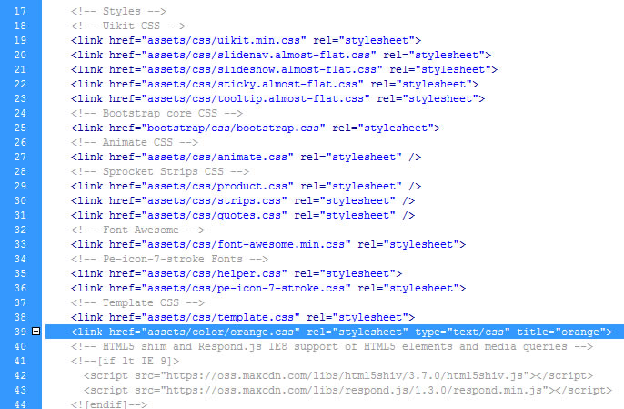
- I don't want to use the available colors you setup, how do i create another one?
Well, just open one of the provided css file, copy and paste it, rename it as you wish, then open it, use a Find & Replace of your css editor to modify the color. I.e. if the color is orange FF9900 then use the find and replace all the lines containing that color with the color of your choice (see below)
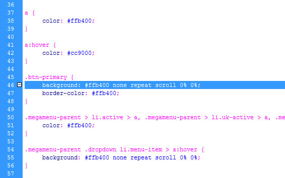
- How do i replace the site logo with my own?
Locate the images folder and replace the logo.png (120 x 28 px) with your own, then upload it to your server. (see the picture below).
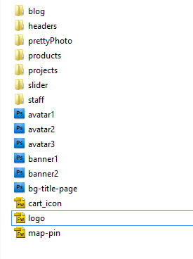
- How do i set my social media addresses?
Open the index.html file, go to the line 527 and put the link to your social media pages inside there (see the picture below).
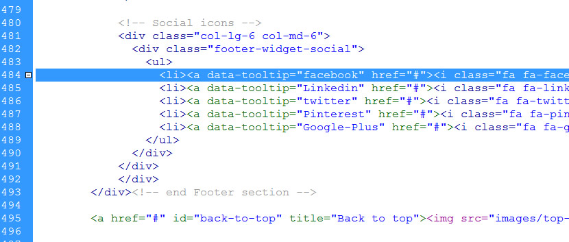
- How do i modify the menù?
Open the index.html and find the line 58 as shown in the picture below. Modify the menu and the links as you wish.
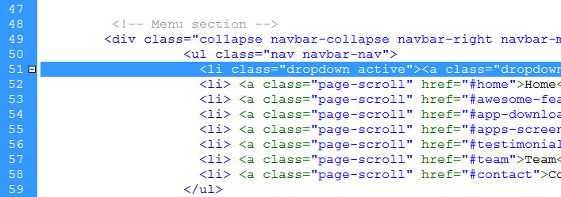
- How do i change the main slideshow pictures?
Inside the main folder find the main-one.jpg and main-two.jpg pictures and replace the slide1.jpg (1600x900), slide2.jpg (1600x900) and so on....
If you want to change the text above the sliders as well, open the index.html, start from line 82 and go down in order to replace the text with your own.
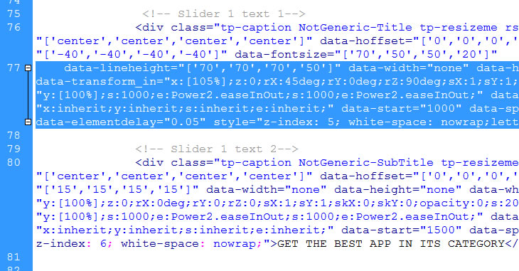
- How do i change the "Awesone Features" infos?
Open the index.html page, starting from line 125, replace the text infos with your own. Then create a jpg image (size 295x580px) and publish everything to your server

- How do i change the Download App section infos?
Locate the index.html page, open it and start replacing the text infos from line 190 with your own. Then create a image (sixe 258x570 px).
Upload everything to your server.
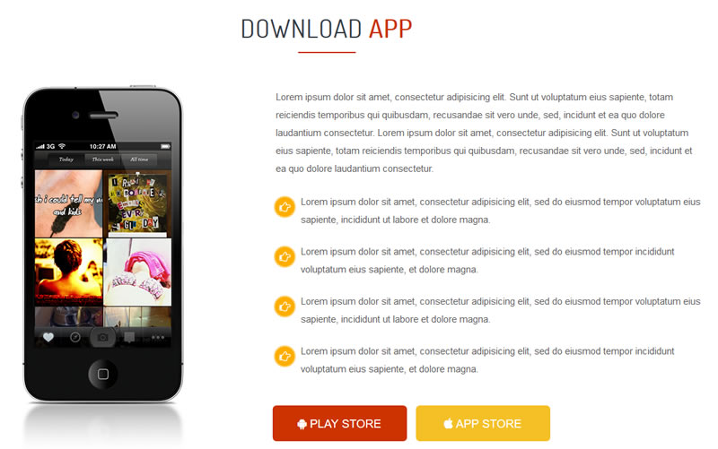
- How do i change the "Apps screenshot" images and infos?
Inside the images folder (images), find the app-screenshots folder and replace all the images inside named screen1.jpg, screen2.jpg, screen3.jpg and so on... Size 242x500px or bigger, it's up to you. Start changing the text from line 215 on
- How do i replace the "Testimonials" section infos?
Inside the main folder, find the index.html page, starting from line 272 (see below) change the content with your own.
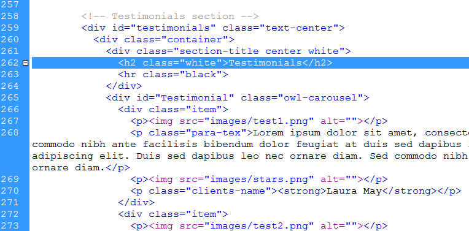
- How do i change the Team pictures and infos?
Start from line 304 and replace the text with your own. Create the team image you want to use (size 280x400 px), copy it inside the images/team folder and upload page and images to your server.
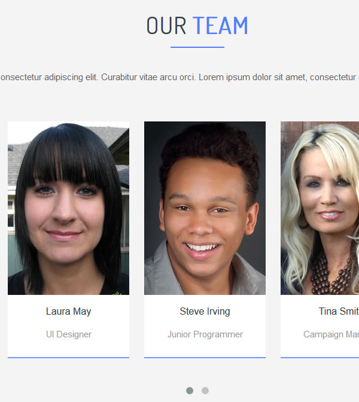
- How do i modify the contact information?
Open the index.html page, Start from line 461 and replace the contact infos with your own
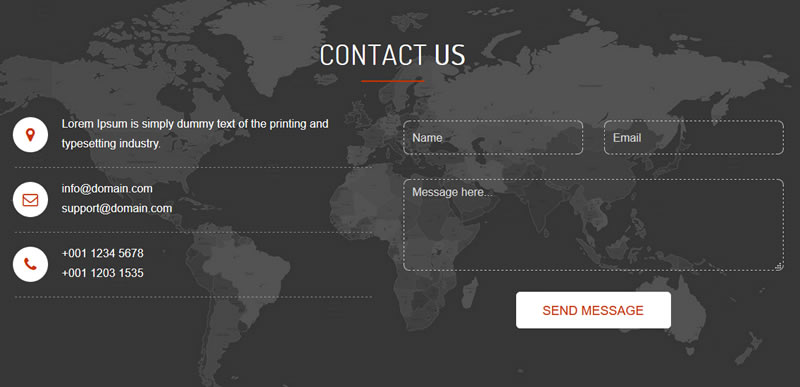
- How do i change the google map address with my own?
Open the index.html page you want to use and go to the bottom (line 630). Reaplce the coordinates with your own. Create a png image of your logo to place it on the map. (map-logo.png size 150x50 px inside the images folder)
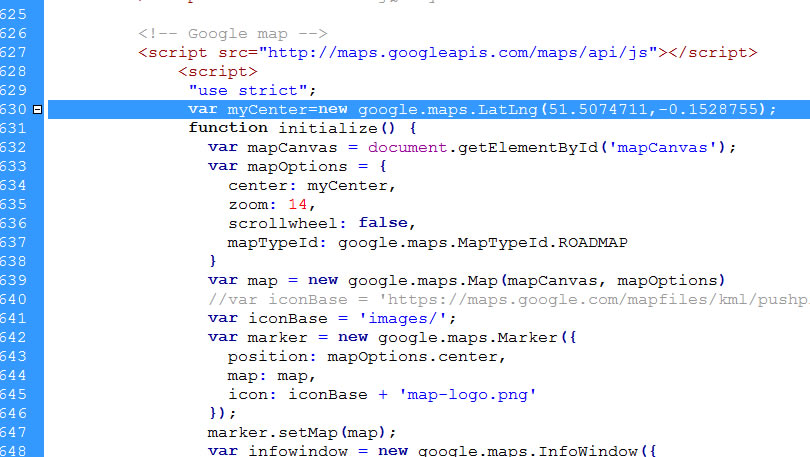
- How do i change the email form in order to receive requests from my site?
Find the mail folder, open the contact_us.php page and replace the email address with your own. (see below)
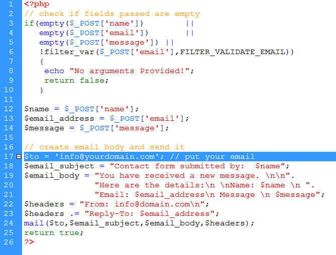